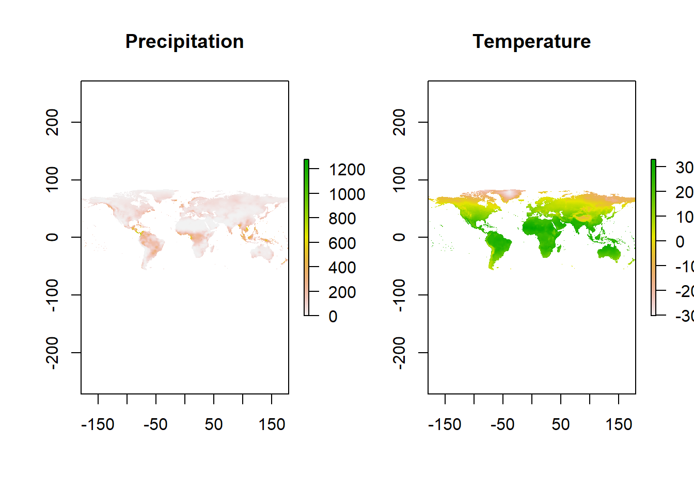

#install.packages("R.utils","rnaturalearth","reshape","raster","magrittr","dplyr","lubridate")
library(R.utils)
library(rnaturalearth)
library(reshape)
library(raster)
library(magrittr)
library(dplyr)
library(lubridate)download.file and enter details as below.gunzip and enter file name with the .gz extension# pre
#preurl<- "https://crudata.uea.ac.uk/cru/data/hrg/cru_ts_4.05/cruts.2103051243.v4.05/pre/cru_ts4.05.1901.2020.pre.dat.nc.gz"
#download.file(preurl, destfile="cru_ts4.05.1901.2020.pre.dat.nc.gz")
#gunzip("cru_ts4.05.1901.2020.pre.dat.nc.gz")
# tmp
#tmpurl<- "https://crudata.uea.ac.uk/cru/data/hrg/cru_ts_4.05/cruts.2103051243.v4.05/tmp/cru_ts4.05.1901.2020.tmp.dat.nc.gz"
#download.file(tmpurl, destfile="cru_ts4.05.1901.2020.tmp.dat.nc.gz")
#gunzip("cru_ts4.05.1901.2020.tmp.dat.nc.gz")This is where data to define your area of interest goes.
You may upload your own geometry,such as shapefile or use any of the map services available in r. In this case we will use country boundaries from the package rnaturalearth
malawi<-rnaturalearth::ne_countries(country ='malawi')Create new object name and call the raster function stack
Enter the path to your data directory/ where you saved the downloaded file.
To extract data exactly to your polygon shape, use the raster functions crop and mask and the bounding geometry (in our case the Malawi national boundary)
prstack<-stack("C:\\Users\\Esther Makabe\\NAPdown\\cru_ts4.05.1901.2020.pre.dat.nc")
temp<-stack("C:\\Users\\Esther Makabe\\NAPdown\\cru_ts4.05.1901.2020.tmp.dat.nc")
pr_crop<-raster::crop(prstack, malawi) # cut out data for malawi
pr_mask<-raster::mask(pr_crop,malawi) # mask data to malawi boundary
tcrop<-raster::crop(temp, malawi)
tmask<-raster::mask(tcrop, malawi)At this point you can already plot individual precipitation and temperature layers using the basic plot function. Below we plot precipitation and temperature for October 2011
par(mfrow=c(1,2))
plot(prstack$X2011.10.16, main='Precipitation')
plot(temp$X2011.10.16, main='Temperature')
This step extracts raster values at each station (depicted by its latitude and longitude) and stores them as a table.
The melt function converts the data from a wide to long table format.
The date values in our data are stored as and within text and the step below is to extract the dates from this text and store them in a new column.
We also, create two more columns to separate Year and Month
Caution!: The process in this code chunk involves modifying the data and data structure and thus extra attention is required. If you need to run the code or part of it more than once, it is strongly recommended to run the whole code chunk rather than in parts.This is to avoid duplication and conflict in executing commands.
prdf<-as.data.frame(pr_mask, xy=TRUE, na.rm=TRUE)%>%melt(id.vars=c('x','y')) # create dataframe
tmpdf<-as.data.frame(tmask, xy=TRUE, na.rm=TRUE)%>%melt(id.vars=c('x', 'y'))
Date<-substr(prdf$variable, 2,11) # extract date values from the dataframe
prdf$Date<-Date # add date column to dataframe
Year<-substr(Date,1,4)
Month<-substr(Date,6,7)
prdf<-cbind(prdf, Year, Month)
colnames(prdf)[colnames(prdf)=="value"]<-"pr" # change column label
tmpdf$Date<-substr(tmpdf$variable, 2,11)
tmpdf$Year<-substr(tmpdf$Date,1,4)
tmpdf$Month<-substr(tmpdf$Date,6,7)
colnames(tmpdf)[colnames(tmpdf)=="value"]<-"tmean" Our data is now ready for some statistical analysis. we may plot monthly data as below;
# summarise data by month and calculate monthly mean
pr_monthly<-prdf%>%dplyr::filter(Year>=1981)%>% group_by(Month)%>%
summarise(across(contains("pr"), ~mean(pr)))
# rearrange drawing order to plot from July to June
pr_monthly$Month<-factor(pr_monthly$Month,levels = c('07','08','09','10','11','12','01','02','03','04','05','06'))
temp_monthly<-tmpdf%>%dplyr::filter(Year>=1981)%>%group_by(Month)%>%summarise('tmean'=mean(tmean))
temp_monthly$Month<-factor(temp_monthly$Month, levels = c('07','08','09','10','11','12','01','02','03','04','05','06'))
# combine the pr and temp data frames
pr_tmp<-cbind(pr_monthly,temp_monthly)
pr_tmp<-pr_tmp[,-3] # remove duplicate column
pr_tmp$Month<-month.abb
pr_tmp$Month<-factor(pr_tmp$Month, levels = c("Jul", "Aug", "Sep" ,"Oct" ,"Nov", "Dec", "Jan" ,"Feb", "Mar", "Apr" ,"May" ,"Jun"))
# define properties for secondary axis (only when plotting 2 variables in the same plot area)
ty<-list(overlaying = "y",
side = "right",
title = "Temperature (°C)",
autotick = FALSE,
dtick = 8,
range=c(15,30)
)
# plot
plotly::plot_ly(type= 'bar', data= pr_tmp, x= ~Month, y= ~pr, name = 'Precipitation')%>%
plotly::add_lines(x= ~Month, y= ~tmean,name= 'Temperature', yaxis='y2')%>%
plotly::add_markers(x= ~Month, y= ~tmean,color='#D21919', yaxis='y2', name='Temperature', showlegend=FALSE)%>%
plotly::layout(legend=list(orientation='h', y=-0.13,x=0.65), yaxis=list(title='Precipitation (mm)',showticklables=F),width=700, height=450, title='Malawi \n (Mean 1981-2020)', yaxis2=ty)%>%
plotly::subplot(titleX = TRUE, titleY = TRUE)or the annual means as below;
pr_ann<-prdf%>%dplyr::filter(Year>=1981)%>% group_by(Year)%>%
summarise(across(contains("pr"), ~mean(pr)))
temp_ann<-tmpdf%>%dplyr::filter(Year>=1981)%>%group_by(Year)%>%summarise('tmean'=mean(tmean))
# combine the pr and temp data frames
pr.tmp<-cbind(pr_ann,temp_ann)
pr.tmp<-pr.tmp[,-3] # remove duplicate column
# define properties for secondary axis
ty<-list(overlaying = "y",
side = "right",
title = "Temperature (°C)",
autotick = FALSE,
dtick = 10,
range=c(0,30)
)
# plot
plotly::plot_ly(type= 'bar', data= pr.tmp, x= ~Year, y= ~pr, name = 'Precipitation')%>%
plotly::add_lines(x= ~Year, y= ~tmean, mode = 'lines+markers',name= 'Temperature', yaxis='y2')%>%
#plotly::add_markers(x= ~Month, y= ~tmean, pch=1,color='#D21919', yaxis='y2', name='')%>%
plotly::layout(legend=list(orientation='h', y=-0.13,x=0.7), yaxis=list(title='Precipitation (mm)',showticklables=F),width=700, height=450, title='Malawi \n (Mean 1981-2020)', yaxis2=ty, xaxis=list(tickangle=270))The two preceeding plots are twin-plots, meaning two graphics have been combined in a single plot area. To plot just one you may be choose one of the dataframes say temperature and plot it on its own. See below
temp_ann%>%filter(Year>2000)%>% plotly::plot_ly()%>%
plotly::add_lines(x= ~Year, y= ~tmean, color='red', showlegend=FALSE)%>%
plotly::add_markers(x= ~Year, y= ~tmean, color='red', showlegend=FALSE, name='Temperature')%>%
plotly::layout(yaxis=list(title='Mean Temerature (°C)'),xaxis=list(tickangle=270))